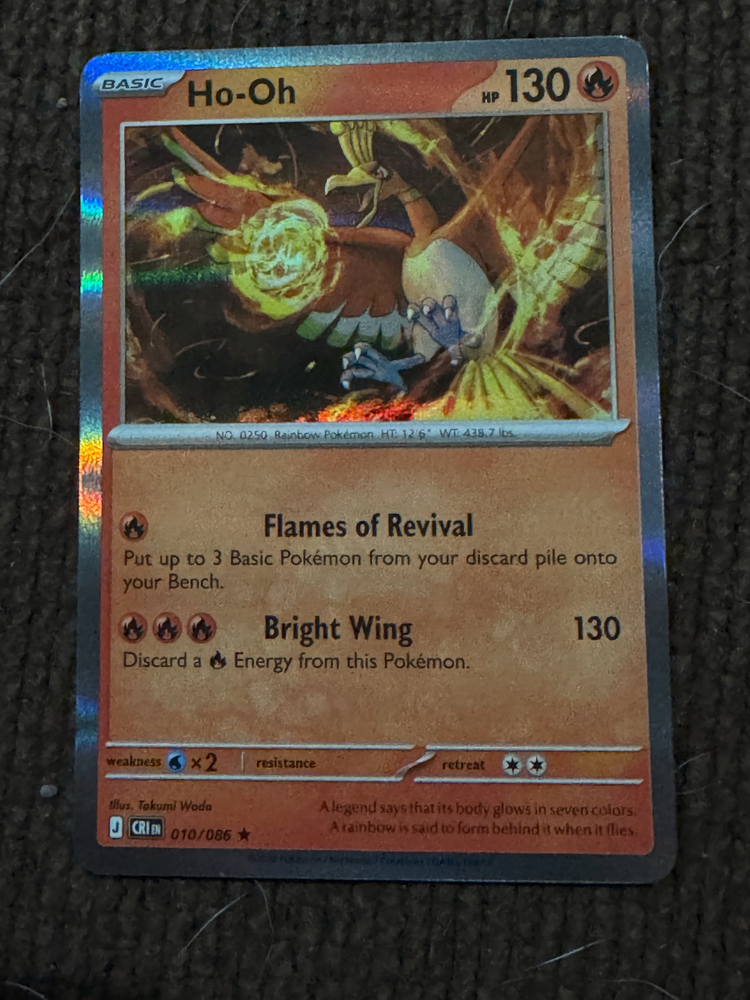

Loading CV engine…
⌗
Scan. Analyze.
Pre-Grade.
Use your phone camera to inspect Pokémon cards before you submit them.

Your photos stay on this device in this prototype.
Scan Card
1Capture2Inspect3Grade
PLACE CARD INSIDE FRAMEKeep all 4 corners visible
Photo qualityWaiting for photo
For the strongest result, shoot straight-on in bright, even light. Add a second angled photo for surface inspection.
Card Detected
✓Pokémon card
Identification pending
Waiting for image analysis
Card boundary ✓ Detected
Text region ✓ Readable
Perspective ⚠ Slight angle
Holographic glare ⚠ Present
Image analysis: Measuring card geometry and visible image quality…
Pre-Grade
Ho-Oh
Mega Evolution — Chaos Rising
010/086 • Holo RareESTIMATED PRE-GRADE RANGE—Analyzing
Confidence —
Condition breakdown
Centering—
Corners—
Edges—
Surface—
Computer visionAnalyzing the image.
Improve confidenceAnalyzing.
Collection
Scans0
Avg. Grade8.5
ModeLocal